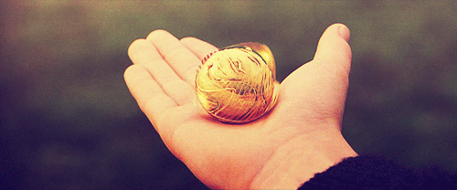

Les règles du jeu :
Le Quidditch se joue sur des balais volants, le but est de marquer le plus de points possibles.
Ce sport se joue en deux équipes qui s’affrontent sur un terrain, celles-ci sont constituées de sept joueurs,
il y a un gardien, deux batteurs, trois poursuiveurs et un attrapeur.
Il existe trois balles différentes pour jouer au Quidditch : il y a le Souafle,
c’est une balle que les poursuiveurs se lancent pour essayer de les faire passer dans un des trois buts de l’équipe adverse.
Ces buts sont de grands anneaux fixés sur de grands poteaux à hauteurs différentes.
Le second type de balle est le Cognard, il y en a deux et elles se déplacent toutes seules pour faire tomber les joueurs des
équipes de leurs balais et c’est aux batteurs de repousser les Cognards des membres de leur équipe et de les renvoyer vers ceux de
l’équipe adverse grâce à leurs battes.
Enfin la dernière balle est le Vif d’or, c’est la plus rapide mais aussi la plus petite et c’est à l’attrapeur de l’équipe d’attraper cette balle,
le fait de l’attraper lui permet de remporter le match.
10 points cognards et vif d’or 150 points
